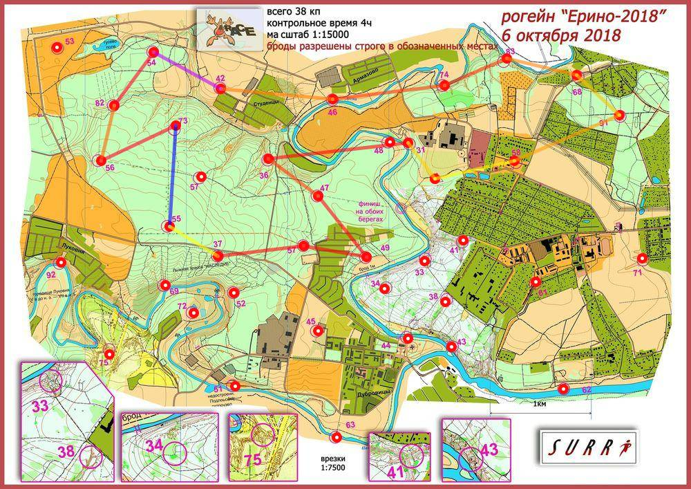

Рогейн Ерино 6.10.18
| Участники | Гундоров Сергей
|
| Группа | М4Б |
| Место | 20 |
| Очки | 95 |
| Штраф | 0 |
| Время | 03:54:44 |
| Результат | 95 |
| КП | Время | Сплит | Расстояние, км | Темп, мин/км |
|---|
| С | 12:00:00 | | | |
| 58 | 12:06:36 | 00:06:36 | 0.806 | 8.2 |
| 91 | 12:19:02 | 00:12:26 | 1.128 | 11.0 |
| 68 | 12:24:41 | 00:05:39 | 0.572 | 9.9 |
| 83 | 12:33:11 | 00:08:30 | 0.715 | 11.9 |
| 74 | 12:42:58 | 00:09:47 | 0.669 | 14.6 |
| 46 | 12:58:58 | 00:16:00 | 1.111 | 14.4 |
| 42 | 13:12:26 | 00:13:28 | 1.115 | 12.1 |
| 54 | 13:30:28 | 00:18:02 | 0.753 | 23.9 |
| 82 | 13:44:17 | 00:13:49 | 0.652 | 21.2 |
| 56 | 13:51:26 | 00:07:09 | 0.558 | 12.8 |
| 73 | 14:08:12 | 00:16:46 | 0.813 | 20.6 |
| 55 | E | E | 0.999 | >999 |
| 37 | 14:36:46 | E | 0.561 | <1 |
| 59 | 14:51:03 | 00:14:17 | 0.855 | 16.7 |
| 49 | 15:01:50 | 00:10:47 | 0.626 | 17.2 |
| 47 | 15:15:57 | 00:14:07 | 0.769 | 18.4 |
| 36 | 15:24:40 | 00:08:43 | 0.613 | 14.2 |
| 31 | 15:48:27 | 00:23:47 | 1.385 | 17.2 |
| Ф | 15:54:44 | 00:06:17 | 0.664 | 9.5 |
| | | 03:54:44 | 14.803 км | 15.9 мин/км |
|---|
